Analyzing and Predicting Delivery Delays in Supply Chain Logistics
An executive analytics report using shipment pricing and delivery history data to identify delay patterns, evaluate operational risk factors, and assess whether delivery delays can be predicted in advance.
1. Introduction / Business Problem
Supply chain efficiency is essential for timely delivery, yet delays in global logistics can increase costs, reduce customer satisfaction, and disrupt operations. As supply chains become more complex, organisations need data-driven approaches to understand why delays occur and identify at-risk shipments. This project analyses historical shipment data to uncover key drivers of delivery delays and assess whether delays can be predicted in advance, with the aim of improving planning and operational efficiency.
Key Analytical Questions
- How severe are delivery delays when they occur?
- What factors contribute most to delivery delays?
- Do delivery delays vary by month or season?
- Does the fulfilment channel influence delay risk?
- Do larger or higher-value shipments have a higher risk of delay?
- Which shipment methods or regions are most prone to delays?
- Can a predictive model reliably identify delayed shipments before delivery?
2. Data Overview
The dataset used for this project is the Supply Chain Shipment Pricing Data dataset from Kaggle. It contains shipment-level supply chain records, including delivery dates, shipment modes, countries, vendors, product groups, item quantities, item values, freight costs, insurance values, and other operational attributes.
3. Data Cleaning Summary
The dataset was cleaned to improve reliability before analysis. Column names were standardised, encoding issues were reviewed, date fields were converted into datetime format, and mixed numeric fields such as freight cost, weight, and line item insurance were cleaned and converted into numeric data types. Irrelevant identifiers, constant fields, and columns with excessive missing values were removed.
Missing numeric values were imputed using the median because the numeric distributions were skewed, while missing categorical values were labelled as None. Duplicate records were removed. Two new variables were engineered from scheduled delivery date and delivered to client date: delivery_delay_days, which measures how early or late a shipment arrived, and delivery_delay_flag, which identifies whether a shipment was delayed. These engineered variables supported deeper analysis of both delay severity and delay risk.
4. Exploratory Data Analysis / Key Findings
How severe are delivery delays?
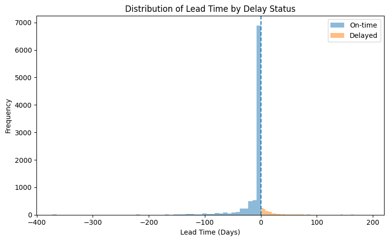
Distribution of delivery delay days showing concentration around on-time deliveries with long tails.
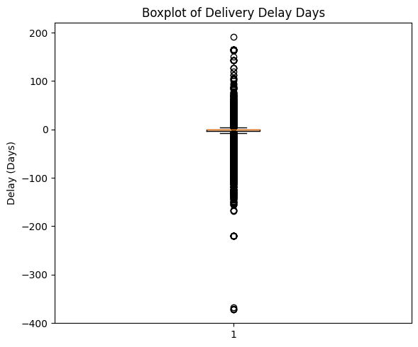
Boxplot highlighting spread, median, and extreme delay outliers.
Most shipments are delivered on time or slightly early, with a strong concentration around zero delay; however, the distribution is highly skewed with a long tail indicating significant delays. While the median delay is approximately 0 days, variability is substantial, with some shipments delayed by over 100 days and others delivered more than 300 days early. The boxplot confirms numerous outliers, especially on the delay side, showing that although delays are not frequent, they can be severe, suggesting generally stable performance with occasional high-impact disruptions.
What factors contribute to delivery delays?
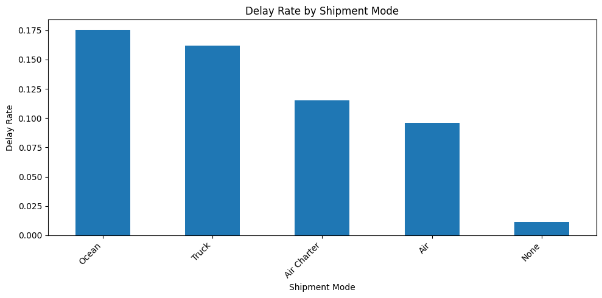
Delay rate by shipment mode.
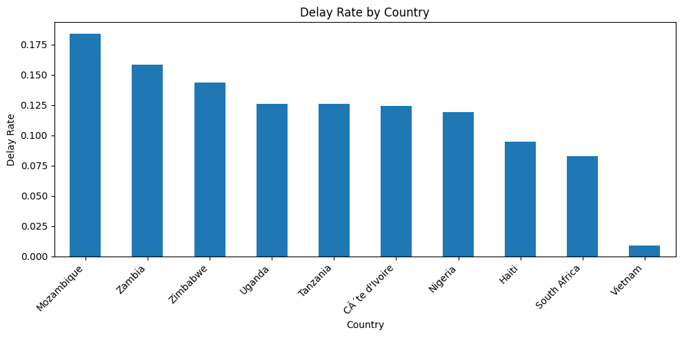
Delay rate by top countries.
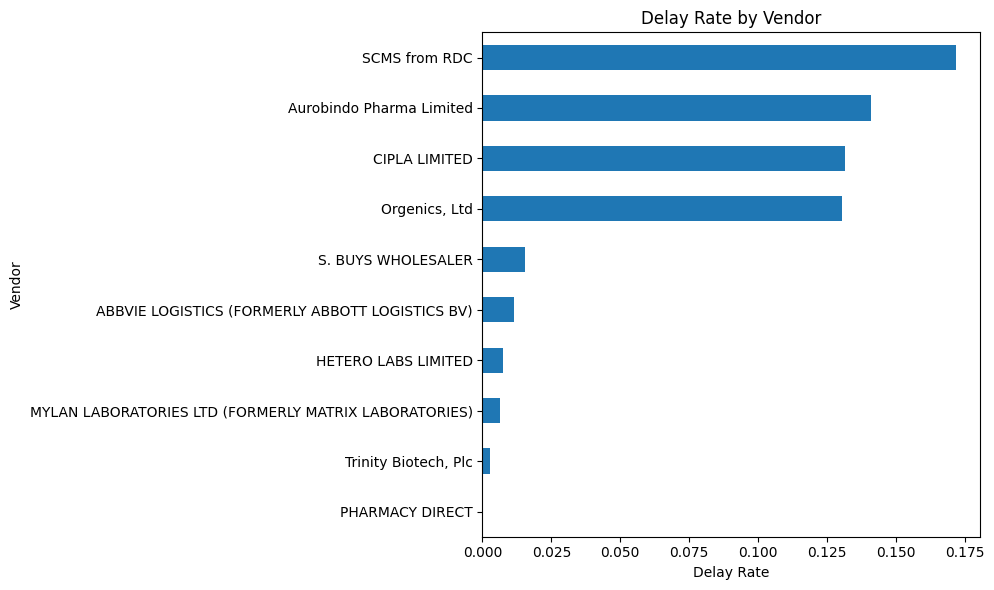
Delay rate by top vendors.
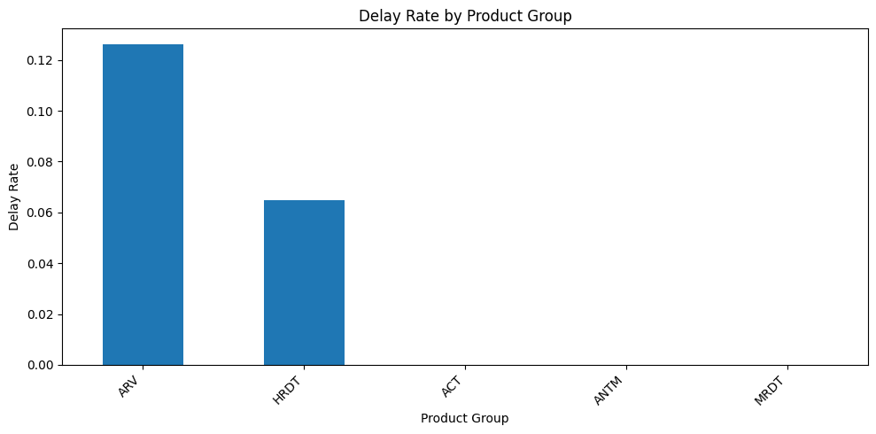
Delay rate by product group.
Delivery delays are influenced by key operational factors including shipment mode, country, vendor, and product group. Ocean (≈17.5%) and truck (≈16%) shipments show the highest delay rates, followed by air charter (≈11–12%) and air (≈9–10%), indicating that slower transport methods are more prone to delays. Regionally, Mozambique (≈18–19%), Zambia (≈16%), and Zimbabwe (≈14%) have the highest delay rates, while Vietnam remains very low (≈1%). Vendor performance also varies, with SCMS from RDC (≈17%), Aurobindo Pharma (≈14–15%), and CIPLA/Orgenics (≈13%) showing higher delay risks. Product group differences are evident, with ARV (≈12.7%) higher than HRDT (≈6.5%), suggesting added complexity in handling. Overall, delays are not random but driven by identifiable operational, geographic, supplier, and product-related factors.
Do delays vary by month or season?
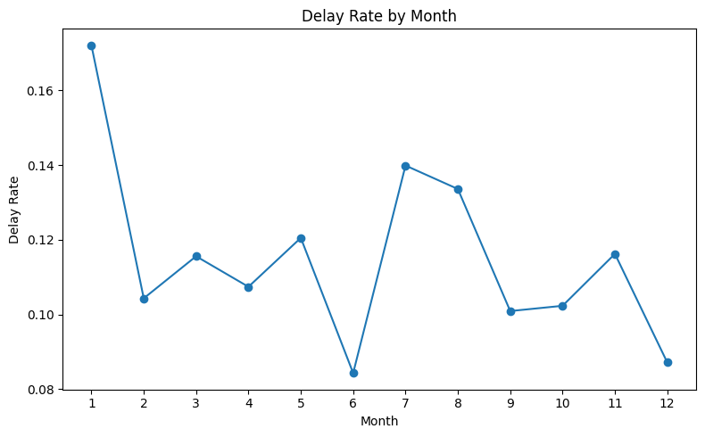
Delay rate by month.
Delivery delays show noticeable variation across months, indicating seasonal patterns. January has the highest delay rate at about 17%, followed by July and August at around 14% and 13%, suggesting periods of higher operational pressure or disruption. In contrast, June and December have the lowest delay rates at approximately 8–9%. Overall, delays fluctuate throughout the year, showing that delivery performance is influenced by seasonal factors rather than remaining constant.
Does fulfilment channel influence delivery delays?
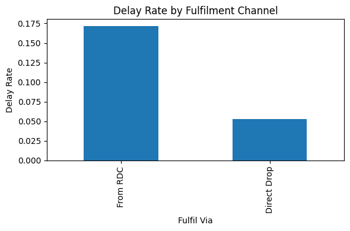
Delay rate by fulfilment channel.
The fulfilment channel shows a strong impact on delivery performance. Shipments fulfilled through RDC have a significantly higher delay rate of about 17%, compared to direct drop shipments at approximately 5%. This indicates that centrally managed distribution channels may introduce additional handling or coordination delays, while direct delivery routes tend to be more efficient.
Do larger or higher-value shipments have a higher risk of delay?
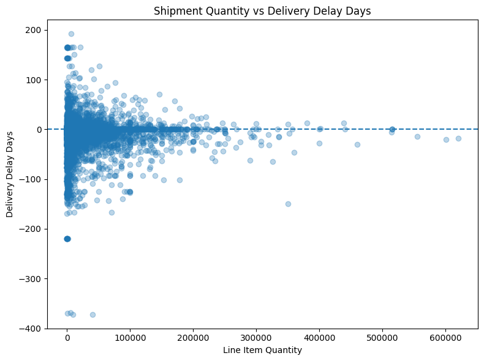
Shipment quantity vs delivery delay days.
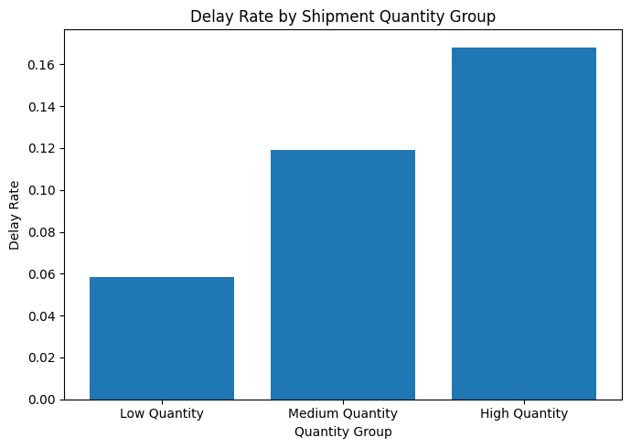
Delay rate by shipment quantity group.
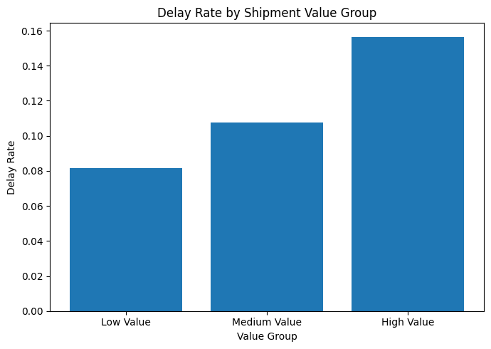
Delay rate by shipment value group.
Shipment size and value show a clear relationship with delivery delays. While the scatter plot indicates no strong linear pattern between quantity and delay days, grouped results reveal a clear trend: low-quantity shipments have the lowest delay rate (≈5.8%), increasing to ≈11.9% for medium and ≈16.8% for high-quantity shipments. A similar pattern is observed for value, with delay rates rising from ≈8.1% (low) to ≈10.8% (medium) and ≈15.6% (high). This suggests that larger and higher-value shipments are more likely to experience delays, likely due to increased handling complexity and coordination requirements.
Which shipment methods or regions are most prone to delays?
Ocean shipments have the highest delay rate at approximately 17.5%, followed by truck shipments at around 16%. Regionally, Mozambique records the highest delay rate at about 18–19%, followed by Zambia at approximately 16% and Zimbabwe at around 14%.
5. Predictive Modelling Summary
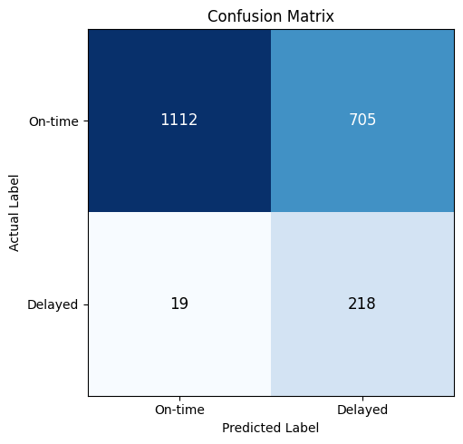
Confusion matrix.
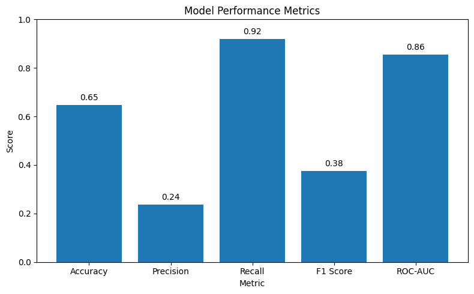
Model Prediction metrics.
Before modelling, leakage features (date and derived delay variables) were removed, categorical variables were one-hot encoded, and numerical features were scaled. The data was split using stratified sampling to preserve class imbalance. Due to this imbalance, the model was tuned to prioritise recall for delayed shipments, achieving 92% recall and significantly reducing missed delays, although with lower accuracy and more false positives. This trade-off aligns with the business objective, as incorrectly flagging a shipment has low impact, while missing a delay can lead to serious operational and financial consequences. Prioritising recall therefore enables early identification of high-risk shipments and supports proactive decision-making.
6. Recommendations
Based on the analysis, several actions can be taken to reduce delivery delays and improve overall supply chain performance.
First, prioritise optimisation of high-risk shipment methods. Ocean and truck shipments, which show the highest delay rates (≈17.5% and ≈16%), should be reviewed for routing, scheduling, and coordination improvements. Where possible, alternative transport options such as air or air charter can be considered for time-sensitive deliveries.
Second, strengthen operations in high-delay regions such as Mozambique (≈18–19%), Zambia (≈16%), and Zimbabwe (≈14%). This may involve improving local logistics partnerships, enhancing infrastructure coordination, or increasing monitoring and contingency planning in these areas.
Third, monitor and manage vendor performance more closely. Vendors with higher delay rates, such as SCMS from RDC and certain suppliers, should be evaluated for process inefficiencies, and performance benchmarks should be introduced to improve reliability.
Fourth, account for shipment complexity in planning. Larger and higher-value shipments show higher delay risk, so additional planning, tracking, and resource allocation should be applied to these shipments.
Finally, the predictive model developed in this study should be deployed as an early warning system. With a recall of approximately 92%, the model is effective at identifying high-risk shipments in advance, enabling proactive intervention even if some non-delayed shipments are incorrectly flagged.
7. Conclusion
This project analysed supply chain shipment data to identify the key drivers of delivery delays and assess whether delays can be predicted in advance. The findings show that delays are influenced by factors such as shipment mode, region, vendor performance, product type, and shipment size, with ocean and truck transport, certain regions (e.g., Mozambique and Zambia), and larger or higher-value shipments showing higher risk. Seasonal variation also indicates periods of increased delay likelihood. The predictive model further demonstrated that delays can be effectively identified early, achieving high recall and significantly reducing missed delays despite lower overall accuracy. This highlights the value of a recall-focused, data-driven approach, enabling organisations to detect high-risk shipments in advance and take proactive actions to improve delivery reliability and operational efficiency.